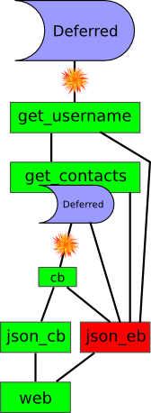

An alternative to threading for multiprocessing: faster, fewer resources, fewer synchronization problems
The system requirements for an asynchornous programming environment are the ability to do non-blocking IO, which means that functions like read and write will not block until data is available; and the ability to monitor multiple IO channels for activity simultaneously, usually via the select or poll syscall.
Basic asynchronous style implements the idea of starting an operation: when a user clicks this button, call this function. But it breaks down when that function needs to do something more complex than drawing something onscreen - performing a database query, for example.
We need something that can model an ongoing process without blocking. Sort of a deferred function return.
Deferred: a result that's not ready yet
# see example1.py
def print_user_info(user):
d = mydb.get_user(user)
def got_info(res):
print "name:", res.name
d.addCallback(got_info)
This is a very basic model of deferreds, but it handles the notion of ongoing processes nicely.
This particular style, using nested functions, is my favorite, but lots of people use separate (un-nested) functions instead.
multiple callbacks are called in sequence
# see example2.py
def get_user_name(user):
d = mydb.get_user(user)
def extract_name(res):
if res:
return res.name
return "(unknown)"
d.addCallback(extract_name)
return d
def print_user_name(user):
d = get_user_name(user)
def print_name(name):
print "Name:", name
d.addCallback(print_name)
Here two callbacks are added to the same deferred. This is a common pattern: get a deferred, add a callback to do your thing, and return the same deferred.
Note that the deferred is initially fired with a User object. The extract_name callback returns a string, which is passed to the next callback in the chain, print_user_name.
This is where API docs are useful: mydb.get_user returns a Deferred that fires with a user object. get_user_name returns a Deferred that fires with the name of the user, or "(unknown)".
# see example2.py
def get_user_name(user):
d = mydb.get_user(user)
def extract_name(res):
if res:
return res.name
return "(unknown)"
d.addCallback(extract_name)
return d
def print_user_name(user):
d = get_user_name(user)
def print_name(name):
print "Name:", name
d.addCallback(print_name)
Here two callbacks are added to the same deferred. This is a common pattern: get a deferred, add a callback to do your thing, and return the same deferred.
Note that the deferred is initially fired with a User object. The extract_name callback returns a string, which is passed to the next callback in the chain, print_user_name.
This is where API docs are useful: mydb.get_user returns a Deferred that fires with a user object. get_user_name returns a Deferred that fires with the name of the user, or "(unknown)".
What about error handling? What if mydb.get_user raises an exception?
A deferred operation can fail, in which case the errback is called
# see example3.py
def print_page_title(url):
d = get_page_title(url)
def got_info(title): # callback
print "title:", title
def fail_info(f): # errback
print "failed!", f.type, f.value
# (consume the error)
d.addCallbacks(got_info, fail_info)
If get_page_title succeeds, then fail_info is never called. However, if the operation fails, then got_info is never called. Instead, fail_info is called wth a Failure object. Failures wrap Exception objects.
Multiple Callback and Errbacks
This is the "full grid" of callbacks and errbacks. Execution can, in principal, switch back and forth from callbacks to errbacks several times for a single deferred.
def get_contacts(username):
d = im_service.get_contact_list(username)
def cb(contacts):
return [ ctct.username for ctct in contacts ]
def eb(f):
print "err getting contacts for %s: %s" \
% (username, f.value)
return f
d.addCallbacks(cb, eb)
return d
def ajax_get_contacts(request):
d = get_contacts(request.query['username'][0]) # BUG
def cb(ctctnames):
return json.dumps({'contacts' : ctctnames})
def eb(f):
return json.dumps({'error' : str(f.value))
d.addCallbacks(cb, eb)
return d
This is a somewhat overwrought example of a full set of callbacks and errbacks. Note that, because it just logs the error, the errback for get_contats always returns the failure, passing it along to ajax_get_contacts' errback. This is what I mean by a "nonterminal" errback.
However, the errback in ajax_get_contacts *is* terminal. Presumably this function's deferred is expected to fire with a JSON string to hand back to the browser, and we want to handle error reporting with JavaScript and not with the usual browser mechanisms. So the failure is "eaten" here, and the web framework's callback, not its errback, will be called next.
Note that an exception in im_service.get_contact_list will leave the deferred un-called-back. This is bad! Don't allow this to happen!
However, an exception in the callback for get_contacts (maybe a contact object without a username attribute?) will cause the errback in ajax_get_contacts to be called and it will report the error correctly. Note that the errback for get_contacts is not called in this case!
There's still a bug here: if no username is specified, then ajax_get_contacts will raise an exception that probably won't be handled very well by the web framework (it will probably create a lot of HTML that will not parse as JSON).
def get_contacts(username):
d = im_service.get_contact_list(username)
def cb(contacts):
return [ ctct.username for ctct in contacts ]
d.addCallback(cb)
return d
def ajax_get_contacts(request):
d = get_contacts(request.query['username'][0]) # BUG
def cb(ctctnames):
return json.dumps({'contacts' : ctctnames})
def eb(f):
return json.dumps({'error' : str(f.value))
d.addCallbacks(cb, eb)
return d
This example is slightly simpler. Any error in im_service.get_contact_list will go directly to ajax_get_contacts' errback method, which will report it to the JavaScript in the browser correctly.
There's still a bug here: if no username is specified, then ajax_get_contacts will raise an exception. The web frameworkd is probably prepared to handle a failure, but not an exception.
from twisted.internet import defer
def ajax_get_contacts(request):
try:
username = request.query['username'][0]
except KeyError:
return defer.succeed(
json.dumps({'error' : 'no username specified'}))
d = get_contacts(username)
def cb(ctctnames):
return json.dumps({'contacts' : ctctnames})
def eb(f):
return json.dumps({'error' : str(f.value))
d.addCallbacks(cb, eb)
return d
This is one way to solve the problem: shortcut the whole contact lookup, and return an already-fired Deferred object to the web framework.
from twisted.internet import defer
def ajax_get_contacts(request):
try:
username = request.query['username'][0]
except KeyError:
return defer.fail() # use current exception
d = get_contacts(username)
def cb(ctctnames):
return json.dumps({'contacts' : ctctnames})
def eb(f):
return json.dumps({'error' : str(f.value))
d.addCallbacks(cb, eb)
return d
Here, we return a failure automatically built from the KeyError to the web framework
from twisted.internet import defer
def get_contacts(username):
d = im_service.get_contact_list(username)
def cb(contacts):
return [ ctct.username for ctct in contacts ]
d.addCallback(cb)
return d
def ajax_get_contacts(request):
d = defer.succeed(None)
def get_username(_): # ignore argument
return request.query['username'][0]
d.addCallback(get_username)
d.addCallback(get_contacts) # this returns a deferred!
def json_cb(ctctnames):
return json.dumps({'contacts' : ctctnames})
def json_eb(f):
return json.dumps({'error' : str(f.value))
d.addCallbacks(json_cb, json_eb)
return d
This moves the entire operation into the callback chain, by starting with an already-fired callback, and getting the username in the first callback. Callbacks always take an argument, and _ is a good way to indicate "I'm ignoring this argument".
get_username returns the username, which is then handed as a single argument to the next callback.
That callback is get_username which coincidentally takes a single arugment. However, it returns a deferred. Why does json_cb not get called with a deferred? Twisted automatically "nests" deferreds -- it basically adds the callbacks and errbacks from the inner deferred to the outer deferred. What actually happens is much more complex, since more callbacks and errbacks could be added to that inner deferred later, but let's not think about that right now.